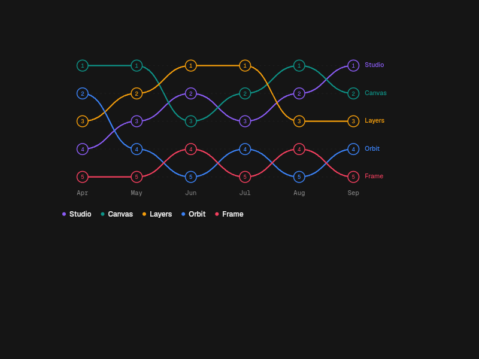

Bump chart · dark default · native PNG proof
12,559 → 9,706 different pixels. Legend 3,099 → 1,800. Exact parity still fails.
Source and candidate each pass 86 native input states at the recorded cadence. Rapid Tab-burst focus loss, ARIA metadata, the unchanged golden, and motion certification remain separate unresolved gates.